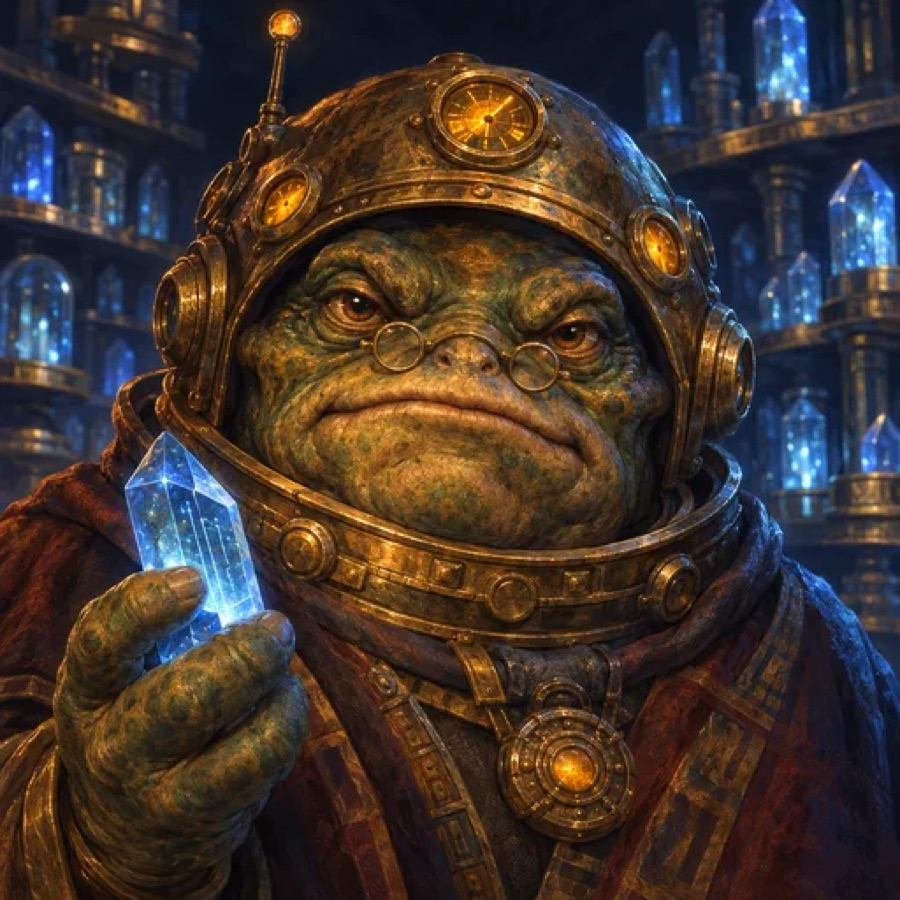
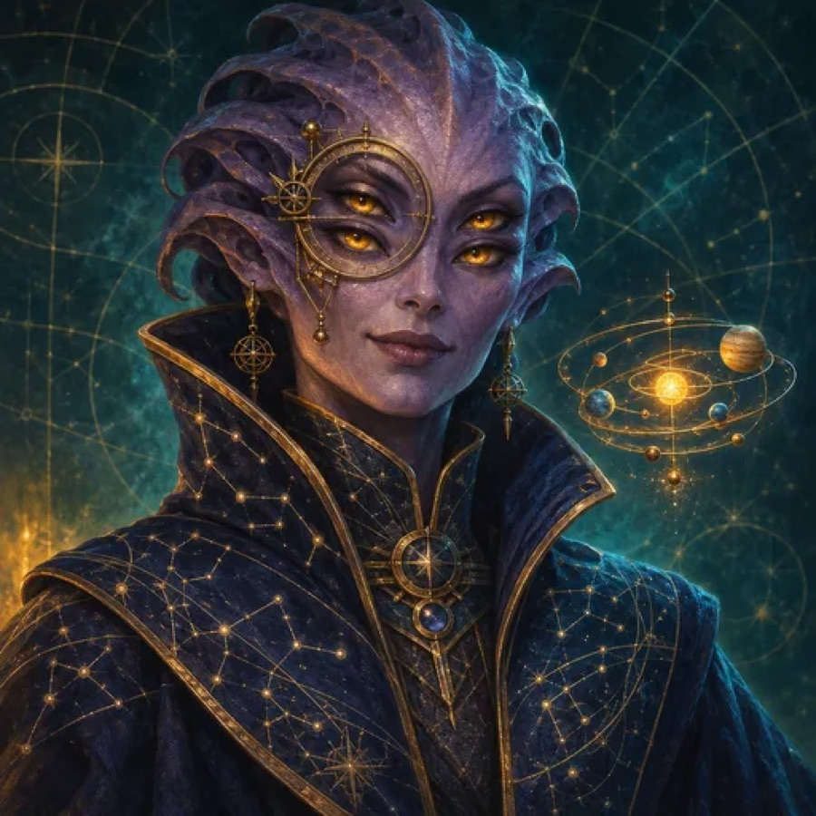
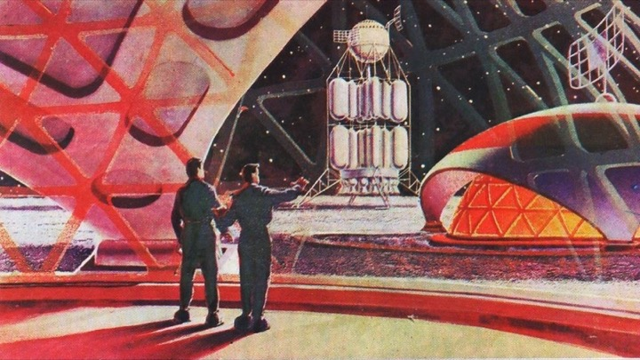
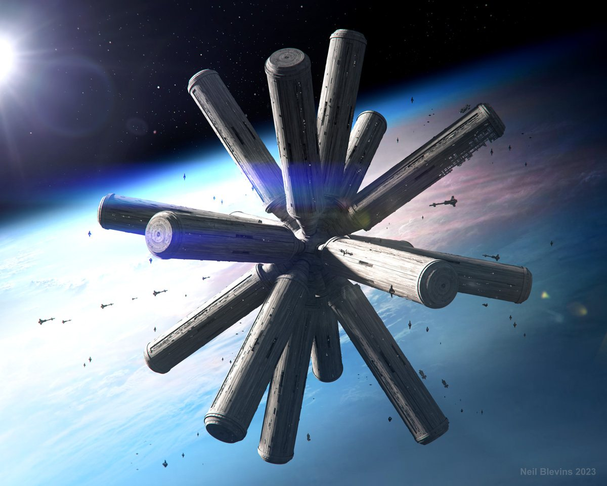
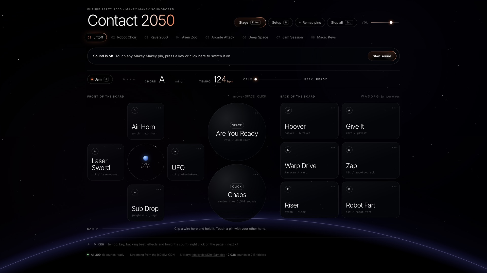

Future Party
2050
The future is who you meet
Vision
If you put the 20 smartest people in the room, you can change the world.
50
We have 50.
It’s enough to change the world at least twice.
Goal
Make 2050 real with people in this room
Rules
Three rules of the future party
1
No past.
2
Help others unleash creativity.
3
Meet new people.
What we have
NFC chip game: scan other people
Tap someone’s card with your phone. You meet their Kin, a creature drawn from their birthday, and it joins your collection.
01 Tap a card
02 Meet their Kin
03 Collect everyone in the room
the-future-2050.vercel.app



On the walls tonight
Topics for inspiration
Future 2050: the show reel
Six facts about how books guess the future
/films
Quotes from the best books
50 quotes from 18 books about the future
/quotes
Ideas of 2050
25 ideas from the books, and what exists today
/ideas
2050 in 78 tweets
What people wrote on X about 2050
/tweets
Futurists on 2050
12 futurists, 43 quotes, where they agree
/futurists
Futuristic concept art
377 pictures of the future from X
/art
Inspiration 1 of 6
Future 2050: the show reel
Six facts about how books guess the future, in two and a half minutes: quotes from the books, posts from X, and NASA footage.
The full film plays on the wall · /films
Inspiration 2 of 6
Quotes from the best books
“There has never been a better day in the whole history of the world to invent something.”
Kevin Kelly, The Inevitable (2016)
One of 50 quotes from 18 books, each checked against the book · /quotes
Inspiration 3 of 6
Ideas of 2050
AI 2041
Every child has an AI tutor
Summa Technologiae
You can wear reality
The Singularity Is Nearer
The brain connects to the cloud
A City on Mars
The Moon first, Mars later
Inspiration 4 of 6
2050 in 78 tweets

Elon Musk
CEO of Tesla and SpaceX · @elonmusk
It’s possible to make a self-sustaining city on Mars by 2050, if we start in 5 years & take 10 orbital synchronizations
25 March 2019 · 27,750 likes · one of 78 posts on the tweet wall, /tweets
Inspiration 5 of 6
Futurists on 2050


Vinod Khosla · Elon Musk · Peter H. Diamandis · Kevin Kelly · Ramez Naam · Balaji Srinivasan · Noah Smith · Yuval Noah Harari · Naval · Daniel Kokotajlo · Hannah Ritchie · Stuart Candy
Where at least three of the twelve agree
Strong AI arrives before 2050
Energy moves off fossil fuels
The world gets older
Climate damage can be limited, under conditions
Inspiration 6 of 6
2050 futuristic concept ideas





Syd Mead · space colony via 70s Sci-Fi Art · Andrei Sokolov · BIG · Uzoma Dunkwu · Simon Roy. Six of 377 pictures from X · /art
Tonight at the party
NFC game ·
Contact 2050 soundboard ·
Visual effect camera ·
Tea ceremony ·
Miracle berries ·
Dumplings ·
Robot ·
Mini-printer ·
3D glasses ·
Diffraction glasses
Try every one of them tonight.
Station 1 of 9
Contact 2050: play with fruits
Fruit is wired into a Makey Makey. Hold EARTH, touch a fruit, and it plays.
Eight kits, from Liftoff to Magic Keys. Jam mode keeps everyone in time and in key.
/soundboard · Enter for stage mode

Station 2 of 9
Visual effect camera: Mirror 2050

Stand in front of the camera and use your hands: liquid air, a particle swarm, a hologram cube, portals and four more effects that went viral on X.
Station 3 of 9
Tea ceremony
Adaptogen tea
Anti-stress
Red tea
Lychee, pineapple and hibiscus
Blue tea
Butterfly pea flower
Purple tea
Add lemon to the blue tea and see the magic
Jasmine tea
Jasmine flowers
Gymnema leaf
After this tea you can’t taste sugar for 30–60 minutes
Dandy tea
Looks and tastes like coffee, with no caffeine
Tea ceremony · Mini demo
Blue tea + lemon = purple
Blue tea is butterfly pea flower. It changes colour with acid.
Add lemon and watch.
Purple.
Station 4 of 9
Miracle berries
Let a berry melt on your tongue, then bite into a lemon.
The lemon tastes sweet.
Sour
Sweet
Station 5 of 9 · Food
Dumplings
Fuel for the future.
Station 6 of 9 · Robot
What’s a future with no robots?
We have one here tonight. Go say hi.
Station 7 of 9 · Mini-printer
Print it
A mini-printer for your pictures. Take a piece of 2050 home.

Station 8 of 9 · 3D glasses
Put on the glasses: Mars in 3D
Raised ridges in Jezero Crater, seen from NASA’s Ingenuity helicopter. More of Mars in 3D all night at /mars.
Red-blue anaglyph · NASA/JPL-Caltech
Station 9 of 9
Diffraction glasses
Put them on and look at the dots. Every point of light turns into a rainbow.
Predicting the future
We can predict the future
Naval on X, 25 September 2018.
Read it again in 2026.
![Post by Naval, 25 September 2018: [In 2050] artificial intelligence can code software far better than humans. That’s like saying an AI can write fiction, create art, and think better than humans. An AI that can create better software is an AI that runs the world, which makes the entire article irrelevant.](../assets/naval-2050.png)
Predicting the future
Arthur C. Clarke
BBC Horizon, 1964. Clarke predicts working from anywhere and machines that think.
Question for the room
It’s a Tuesday in San Francisco in 2050. What would a teenager find absurd about something we do every day in 2026?